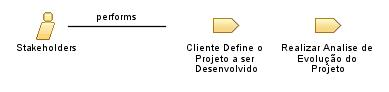

| Role: Stakeholders |
 |
|
Relationships
 |
||
| Process Usage | ||
|---|---|---|
Main Description
Resolver um problema complexo de forma eficiente significa atender às necessidades de um grupo distinto de envolvidos, com perspectivas distintas sobre o problema e as diferentes necessidades que devem ser atendidas pela solução. Esses envolvidos podem ser usuários do sistema, usuários indiretos do sistema, pessoas afetadas pelos resultados dos negócios influenciados pelo sistema ou mesmo compradores econômicos ou defensores do sistema. Para desenvolver uma solução eficaz, é importante conhecer bem quem são os envolvidos no sistema. São alguns exemplos de envolvidos:
|